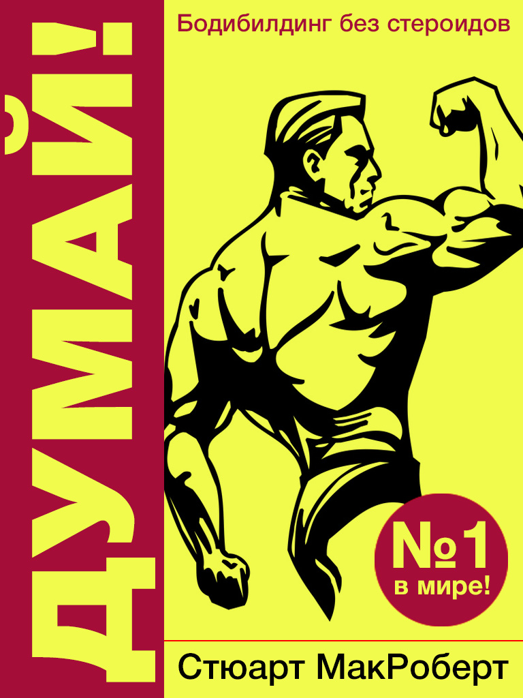

Тренировки
Стюарт МакРоберт «Думай! Бодибилдинг без стероидов»
Эта книга отличается от основной массы популярной литературы по бодибилдингу. Здесь принята другая точка зрения на любительский тренинг. Таким образом, у вас появляется более широкий выбор между альтернативными подходами к занятиям культуризмом. Большое количество информации может сбить с толку. Но гораздо важнее то, что большое количество информации даст вам возможность найти самый эффективный для себя метод тренинга и в полной мере реализовать свой генетический потенциал.
Вадим Протасенко «Думай! Или супертренинг без заблуждений»
Данная книга основана на двух наиболее популярных в среде спортсменов-любителей книг о бодибилдинге: «Думай! Бодибилдинг без стероидов» Стюарта МакРоберта и «Супертренинг» Майка Ментцера. Это теория тренинга, на физиологическом уровне объясняющая воздействие тренировки на мышечный аппарат человека и позволяющая найти ответы на большинство вопросов, интересующих читателя.
Майк Ментцер «СУПЕРТРЕНИНГ»

В книге автор излагает свои взгляды на философию тяжёлого, сверхмощного, стрессового тренинга. Эта книга написана для тех, кто искренне желает усвоить теоретические основы бодибилдинга. Опираясь на последние исследования, автор пытается помочь читателю избавиться от заблуждений, "подковаться" теоретически. В книге автор проводит различие между первичным и вторичным, фундаментальным и наносным. Материалом для книги послужили личные наблюдения за тренировками подопечных Майка Ментцера, понимание законов логики при их применении на практике. Автору удалось сделать захватывающие открытия, прийти к волнующим выводам и сформулировать целый спектр гипотез.
Фредерик Делавье «Анатомия силовых упражнений для мужчин и женщин»
Книга получила всемирное признание и стала универсальным пособием не только для любителей силовых упражнений, но и для профессиональных опытных атлетов. В ней вы найдете подробное описание основных базовых силовых упражнений для развития мускулатуры, познакомитесь с последними достижениями в области совершенствования функциональных качеств организма и эстетики тела. Иллюстрации в сочетании с практическими рекомендациями позволят вам составить собственную программу тренировок. В книге содержатся статьи, раскрывающие основанный на морфологии различных мышц подход к тренировкам, а также разделы, посвящённые травмам, которые возможны при выполнении силовых упражнений.